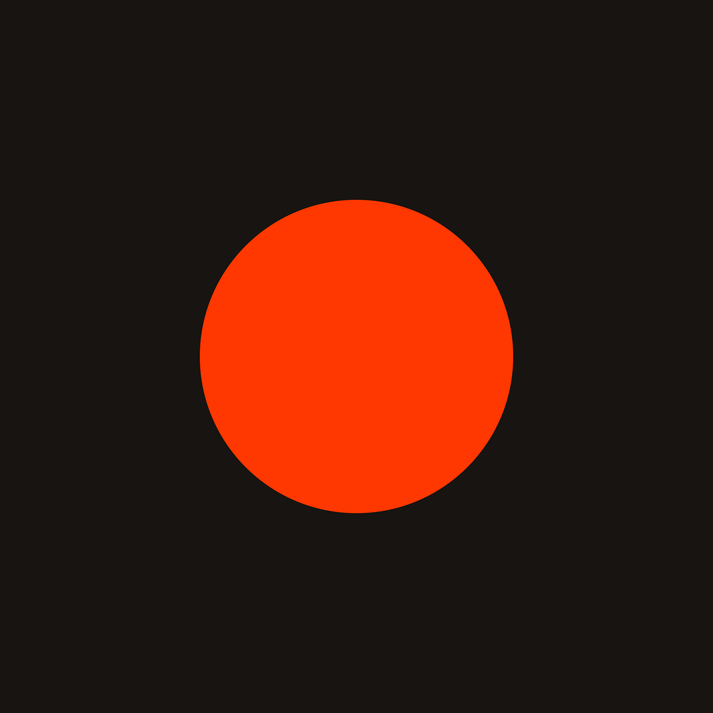

Games by
Jason Walters

Bruto
Bruto is a minimalist puzzle game about color, strategy, and the satisfying ripple of change. Every press sparks a chain reaction, shifting colors in sequence - white, grey, red, and back again. The goal is simple: clear all red.
Eyka
Eyka is a relaxing puzzle game where your goal is to harmonize colors. Enjoy playing with no pressure, no time limits, no ads, and full offline play.